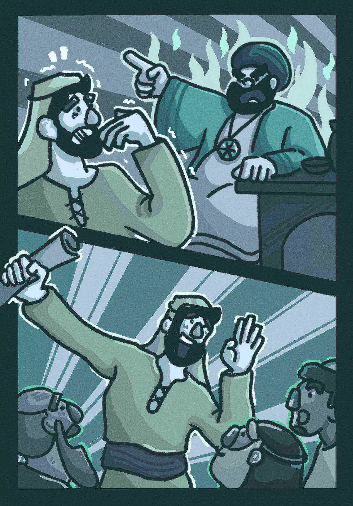

第3章

耶穌與尼哥德慕
1有一個法利賽人，名叫尼哥德慕，是猶太人的官。2這人夜裏來見耶穌，說：「拉比，我們知道你是從神那裏來作師傅的；因為沒有人能行行你所行的這些神蹟，若不是上帝和他同在。」3耶穌回答說：「我實實在在地告訴你，人若不重生，就不能見神的國。」4尼哥德慕說：「人已經老了，如何能重生呢？豈能再進母腹生出來嗎？」5耶穌回答：「我實實在在地告訴你，人若不是從水和聖靈生的，就不能進神的國。6從肉身生的就是肉身；從靈生的就是靈。7你們不要希奇，因為我對你說：『你們必須是從天上生的』。8靈隨著意思吹，你聽見風的響聲，卻不曉得從哪裏來，往哪裏去；凡從聖靈生的，也是如此。」9尼哥德慕回答他說：「怎能有這事呢？」10耶穌回答說：「你是以色列人的先生，還不明白這事嗎？11我實實在在地告訴你，我們所說的是我們知道的事；我們所見證的是我們見過的；你們卻不領受我們的見證。12我對你們說地上的事，你們尚且不信，若說天上的事，如何能信呢？13除了從天降下、仍舊在天的人子，沒有人升過天。14摩西在曠野怎樣舉蛇，人子也必照樣被舉起來，15叫一切信他的都得永生（或作叫一切信的人，在他裏面得永生）。
16「神這樣的愛了世人，甚至他賜下獨生子，叫一切信他的，不致滅亡，反得永生。17因為神差他的兒子降世，不是要定世人的罪，乃是要叫世人因他而得救。18信他的人，不被定罪；不信的人，罪已經定了，因為他沒有信神獨生子的名。19而這就是定罪。光來到世間，世人愛了暗過於光；因為他們的行為是邪惡的。20凡作惡的便恨光，並不來就光，恐怕他的行為被揭發。21但行真理的人必來就光，要顯明他所行的是靠神而行。」
耶穌和施洗約翰
22這事以後，耶穌和門徒到了猶太地，在那裏居住，施洗。23約翰在靠近撒冷的哀嫩也施洗；因為那裏水多，眾人都去受洗。（24那時約翰還沒有下在監裏。）25約翰的門徒和一個猶太人辯論潔淨的禮，26就來見約翰，說：「拉比，從前同你在約旦河外、你所見證的那位，現在施洗，眾人都往他那裏去了。」27約翰說：「若不是從天上賜的，人就不能得甚麼。28我曾說：『我不是基督，是奉差遣在他前面的』，你們自己可以給我作見證。29娶新婦的就是新郎；新郎的朋友站著，聽見新郎的聲音就甚喜樂。故此，我這喜樂滿足了。30他必興旺，我必衰微。」
「真的嗎？大人，您人太好了。」他不可置信，快速簽下新借據，雀躍離去。
「來，下面一位。」
「我⋯⋯ 我欠了一百石麥子。」他緊張地看著我。
「來，寫八十石就好。」我露出招牌和善笑容，他們看我的眼神都在發光。